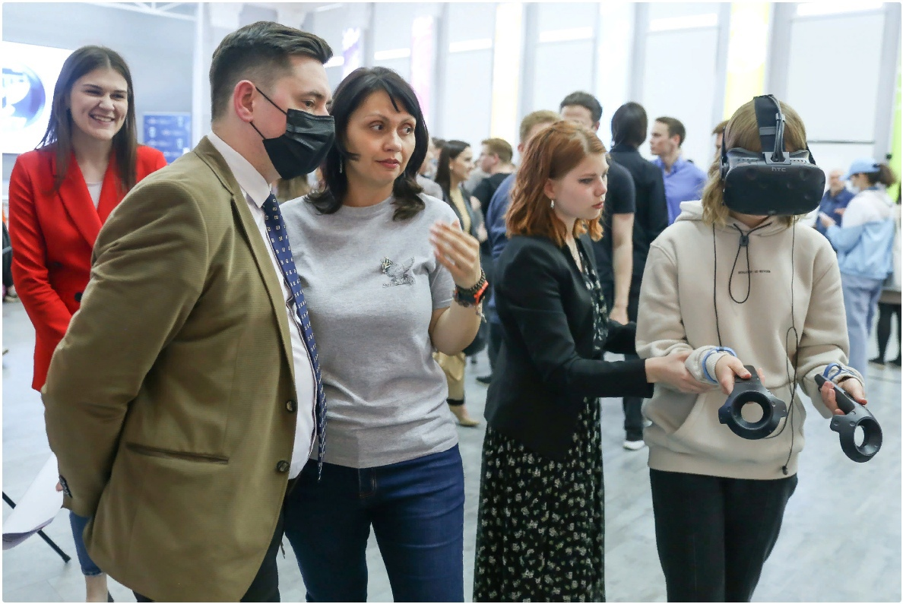

- Я учусь в ВятГУ на факультете автоматики и вычислительной техники,
- специальность "Информационная безопасность телекоммуникационных систем", профиль "Системы подвижной цифровой защищенной связи", специалитет.
- На данный момент я закончила 1-ый курс и закрыла первые две сессии без троек. В первом семестре была одна четверка по математике, а во втором одна четверка по физике.
- Учиться здесь довольно интересно, но сложно.Преимущественно система обучения строится на самообразовании, поэтому нужно уметь распоряжаться своим временем и организовывать свою работу.